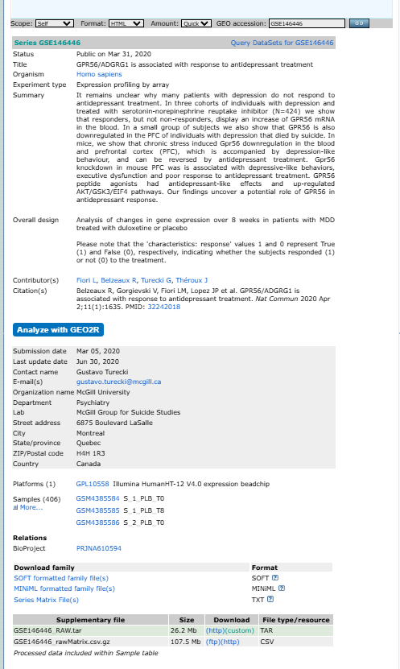
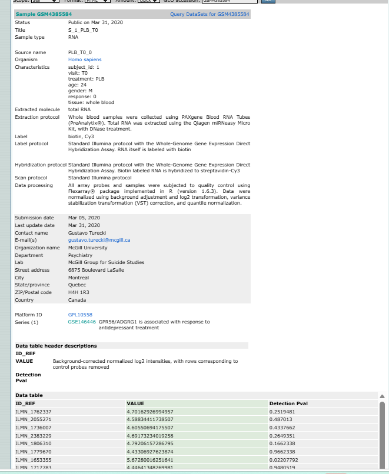

GSE와 GSM의 관계
GSE(Series)는 하나의 연구 전체를 나타내며, 연구에 사용된 여러 GSM(Sample)을 포함합니다. GPL(Platform)은 발현값을 측정하는 데 사용한 microarray 또는 sequencing platform입니다.
GSE: 연구 전체→
GSM: 개별 샘플→
GPL: 측정 플랫폼
GSM은 반드시 환자 한 명을 의미하지 않습니다. 같은 환자의 치료 전·후, 여러 조직 또는 반복측정 샘플이 각각 다른 GSM으로 등록될 수 있습니다. 반대로 pooling된 GSM에는 여러 사람의 시료가 포함될 수도 있습니다.
GSE record 전체 화면 읽기

GSE146446의 Series record. 이미지를 클릭하면 원본 크기로 볼 수 있습니다.
| 항목 | 의미와 확인할 내용 |
|---|---|
| Status | 데이터 공개 상태와 공개일. Public인지 확인합니다. |
| Title | 연구의 핵심 질문과 대상. 제목만으로 분석 그룹을 결정하지 않습니다. |
| Organism | 시료가 유래한 종. 사람 연구는 Homo sapiens인지 확인합니다. |
| Experiment type | Microarray, RNA-seq, methylation 등 데이터 생성 방식입니다. |
| Summary | 연구 배경, 가설과 주요 결과를 요약한 설명입니다. |
| Overall design | 그룹, 시점, 치료, 반복측정과 비교 구조를 설명하는 가장 중요한 항목입니다. |
| Contributor(s) | 데이터를 제출한 연구자입니다. |
| Citation(s) | 연결된 논문. 실험방법과 포함·제외 기준을 확인하는 데 사용합니다. |
| Platforms | GPL accession과 microarray 제품명. 하나 이상의 GPL이 있는지 확인합니다. |
| Samples | 연구에 포함된 GSM 목록. More를 눌러 전체 샘플을 확인합니다. |
| Relations | BioProject, SRA 등 연결된 NCBI 자료입니다. |
| Download family | SOFT, MINiML, Series Matrix 등 GEO 구조화 파일입니다. |
| Supplementary file | 연구자가 제출한 raw data, processed matrix와 추가 파일입니다. |
분석 그룹을 결정하는 핵심 순서: Overall design → Samples의 characteristics → 원 논문의 Methods 순서로 교차 확인합니다.
GSM을 클릭하면 무엇이 보이나?
GSE의 Samples 목록에서 GSM accession을 클릭하면 개별 샘플 페이지로 이동합니다. 이 페이지에는 de-identified sample metadata, 실험방법과 해당 샘플의 발현값이 포함될 수 있습니다.

GSM4385584의 sample metadata, 실험 protocol과 normalized expression table.
| GSM 항목 | 확인 내용 |
|---|---|
| Title | 연구자가 부여한 샘플 이름. 그룹·시점 코드가 포함될 수 있습니다. |
| Source name | whole blood, tumor tissue, PBMC 등 시료의 생물학적 출처입니다. |
| Organism | 샘플의 종입니다. |
| Characteristics | subject ID, visit, treatment, age, sex, response, tissue 등 분석 그룹과 임상정보가 기록됩니다. |
| Extracted molecule | total RNA, genomic DNA 등 추출한 분자 유형입니다. |
| Protocols | 추출, 표지, hybridization, scan과 data processing 방법입니다. |
| Platform ID | 이 샘플을 측정한 GPL accession입니다. |
| Data table | probe ID별 processed expression value와 detection P-value 등이 제공될 수 있습니다. |
개인정보가 아니라 연구용 metadata입니다. GEO에 공개되는 임상정보는 보통 비식별화되어 있으며 연구자가 제출한 범위로 제한됩니다. 모든 환자의 진단·나이·성별 정보가 항상 제공되는 것은 아닙니다.
GSM의 발현값은 무엇인가?
GSM 하단의 Data table에는 한 샘플에서 측정된 probe별 processed value가 표시될 수 있습니다. 예시 화면의 값은 연구자가 처리한 normalized log2 intensity이며, raw intensity와 동일하지 않습니다.
| 열 | 일반적인 의미 |
|---|---|
| ID_REF | GPL에서 정의한 microarray probe ID |
| VALUE | 연구자가 제출한 processed expression value |
| Detection P-value | 해당 probe signal의 검출 신뢰도 지표. 플랫폼에 따라 없을 수 있음 |
주의: VALUE의 정규화 방식과 log2 변환 여부는 연구마다 다릅니다. GSM의 Data processing, GSE의 Series Matrix 설명과 원 논문을 확인해야 합니다.
Download family와 Supplementary files
| 파일 | 내용 | 초급 실습 활용 |
|---|---|---|
| Series Matrix | 여러 GSM의 processed expression matrix와 sample metadata | GEO2R·GEOquery 분석에 가장 편리 |
| SOFT family | GSE·GSM·GPL 정보를 텍스트 구조로 묶은 파일 | GEO 구조 확인·프로그램 처리 |
| MINiML family | XML 형식으로 제공되는 GEO family metadata | 고급 programmatic parsing |
| RAW.tar | 여러 sample raw file을 하나로 모은 TAR archive | raw data부터 재전처리할 때 사용 |
| non-normalized matrix | 연구자가 제공한 비정규화 또는 중간 발현행렬 | 직접 정규화를 수행할 때 사용 |
.tar는 분석 데이터 형식이 아니라 여러 파일을 하나로 묶은 archive 형식입니다. 압축을 풀면 플랫폼에 따라 .CEL.gz, .txt.gz, .idat 등의 실제 sample file이 나타납니다.
Windows에서 .tar 파일 풀기
방법 1. 7-Zip 사용
- 7-Zip 공식 홈페이지에서 설치합니다.
GSE..._RAW.tar파일을 마우스 오른쪽 버튼으로 클릭합니다.- 7-Zip → 압축 풀기를 선택합니다.
- 생성된 폴더 안에서 sample별 raw file을 확인합니다.
- 내부 파일이
.CEL.gz라면 분석 패키지가 그대로 읽을 수 있는지 확인하고, 필요한 경우 한 번 더 압축을 풉니다.
방법 2. Windows PowerShell 또는 Terminal
# 압축을 풀 폴더 생성
mkdir data_raw
# TAR archive 풀기
tar -xf GSE146446_RAW.tar -C data_raw방법 3. R에서 풀기
dir.create("data_raw", showWarnings = FALSE)
untar(
"GSE146446_RAW.tar",
exdir = "data_raw"
)
# 압축 해제된 파일 확인
list.files("data_raw")파일명이
.tar.gz 또는 .tgz라면 Linux 명령에서는 일반적으로 tar -xzf 파일명.tar.gz를 사용합니다. R의 untar()는 일반적인 gzip-compressed TAR도 처리할 수 있습니다.어떤 파일을 받아야 하나?
| 목적 | 권장 파일 |
|---|---|
| GEO2R 또는 빠른 DEG 실습 | Series Matrix / GEO2R |
| R에서 processed expression 재분석 | Series Matrix를 getGEO()로 다운로드 |
| 정규화부터 직접 재현 | RAW.tar 내부 CEL·TXT·IDAT 등 |
| metadata 구조 확인 | GSE/GSM 웹 화면, SOFT 또는 MINiML |
이번 입문 과정: 먼저 Series Matrix로 전체 분석 흐름을 익힙니다. RAW.tar 전처리는 플랫폼별 방법이 다르므로 별도 심화과정으로 다룹니다.
종합 실습: 내가 찾은 데이터셋 조사하기
Step 02에서 선택한 GSE를 열고 다음 정보를 직접 찾아 기록하세요.
- GSE accession, Title, Organism과 Experiment type
- Summary와 Overall design에서 연구 질문과 비교 구조
- GPL accession과 platform 제품명
- 전체 GSM 수와 실제 분석할 Control·Case 수
- 각 그룹에서 GSM을 하나씩 열어 공통 characteristics 열 확인
- 확인 가능한 임상정보: age, sex, diagnosis, treatment, tissue, visit, response 등
- 동일 subject ID가 여러 GSM에 반복되는지 확인
- Data processing에서 normalization과 log2 여부 확인
- Series Matrix와 Supplementary file의 이름·크기·형식
- GEO2R 사용 가능 여부와 분석에 사용할 파일 결정
제출용 기록표
| GSE / GPL | |
|---|---|
| Title | |
| Organism / Experiment type | |
| Control 정의 / n | |
| Case 정의 / n | |
| 조직·세포 | |
| 확인 가능한 임상정보 | |
| 반복측정 여부 | |
| Normalization / log2 | |
| Series Matrix | 있음 / 없음 |
| Supplementary files | |
| 사용할 파일과 이유 |
분석 전 최종 판단 질문
- 각 GSM이 독립된 환자·샘플인가?
- Control과 Case 외에 시점·치료·조직 차이가 함께 섞여 있지 않은가?
- 두 그룹이 동일 GPL과 동일 processing을 사용했는가?
- 필요한 임상정보가 모든 GSM에 동일한 형식으로 존재하는가?
- 내가 선택한 파일이 raw data인지 processed data인지 설명할 수 있는가?